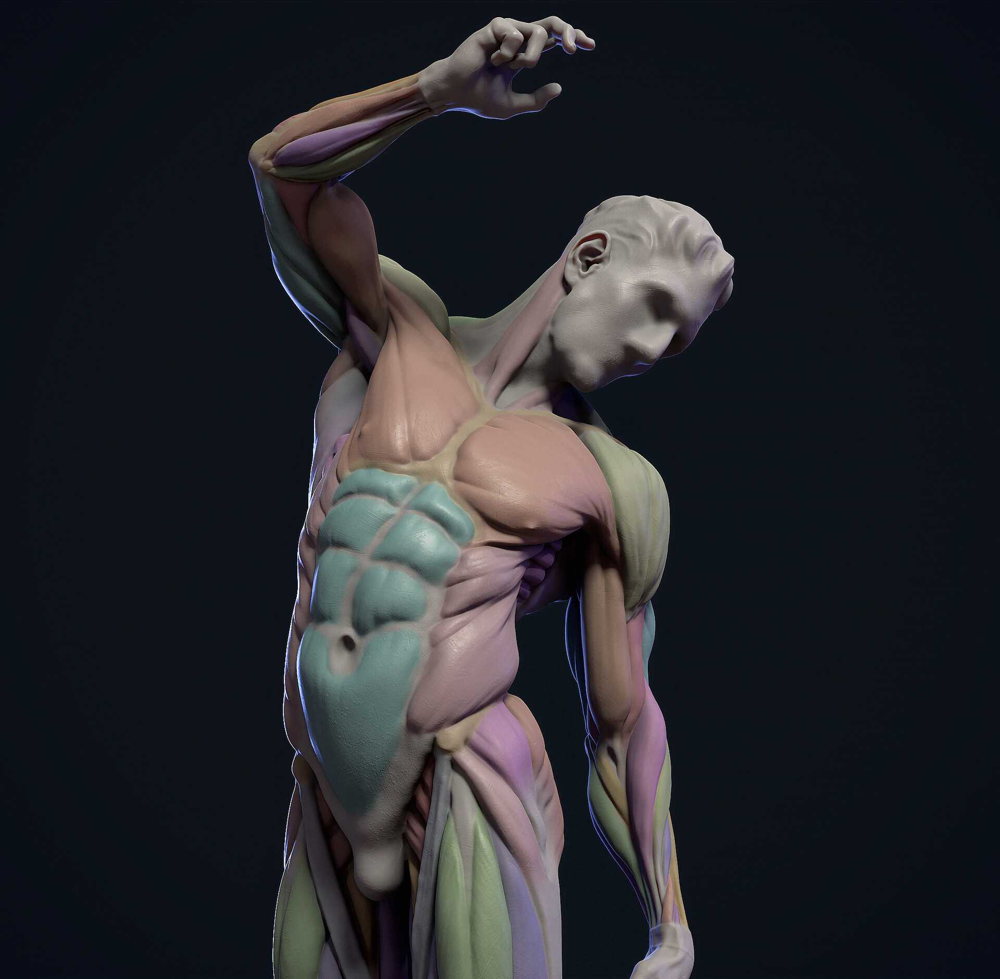

Muscles of the Torso
 Image CreditHere is a list of the muscles of the torso
- Serratus Anterior
- Pectoralis Major
- External Oblique
- Abdominus
- Deltoid
- Trapezius
- Teres Major
- Teres Minor
- Rhomboid Major
- Rhomboid Minor
- Infraspinatus
- Latissimus Dorsi
- Erector Spinae